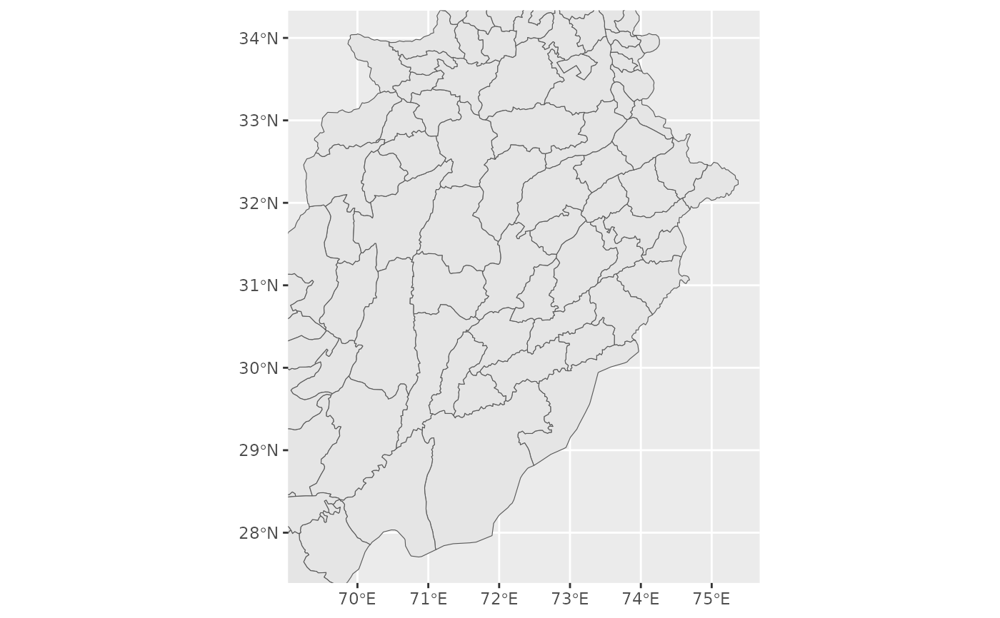

Retrieves the spatial extent (bounding box) of a specific administrative unit by name and level. Useful for setting map views or cropping other spatial data.
Usage
pk_bbox(name, level = c("province", "district", "tehsil"))Value
Returns a bbox object (class "bbox") with named elements:
- xmin
Minimum x-coordinate (longitude or easting)
- ymin
Minimum y-coordinate (latitude or northing)
- xmax
Maximum x-coordinate
- ymax
Maximum y-coordinate
The output is suitable for use with ggplot2::coord_sf(xlim = c(xmin, xmax), ylim = c(ymin, ymax))
or leaflet::fitBounds(lng1 = xmin, lat1 = ymin, lng2 = xmax, lat2 = ymax).
It represents the rectangular extent that exactly contains the requested
administrative unit.
Note
If you see an error like object 'xxx' not found when using this
function, the issue is likely in your data preparation, not pk_bbox().
Test the function directly: pk_bbox("Punjab", level = "province").
If that works, check that your data has the expected column names.
Examples
# Get bounding box for Lahore district
bb <- pk_bbox("Lahore", level = "district")
print(bb)
#> xmin ymin xmax ymax
#> 74.00430 31.25733 74.64111 31.71661
# Use with ggplot2
# \donttest{
library(ggplot2)
districts <- get_districts()
bb_punjab <- pk_bbox("Punjab", level = "province")
ggplot() +
geom_sf(data = districts) +
coord_sf(xlim = c(bb_punjab["xmin"], bb_punjab["xmax"]),
ylim = c(bb_punjab["ymin"], bb_punjab["ymax"]))

# }